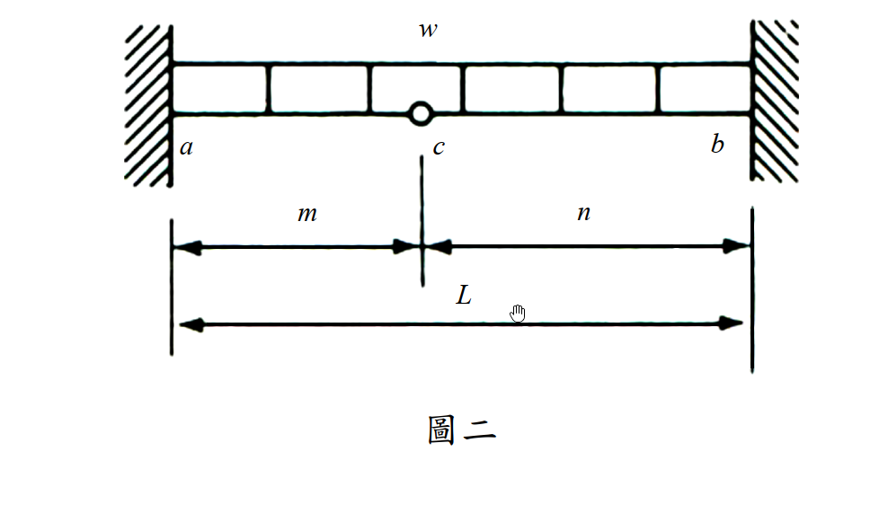
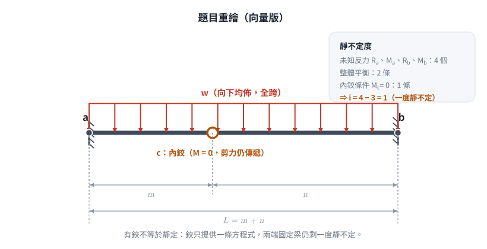
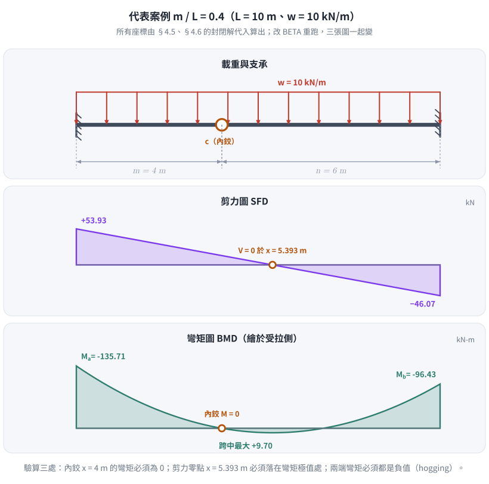
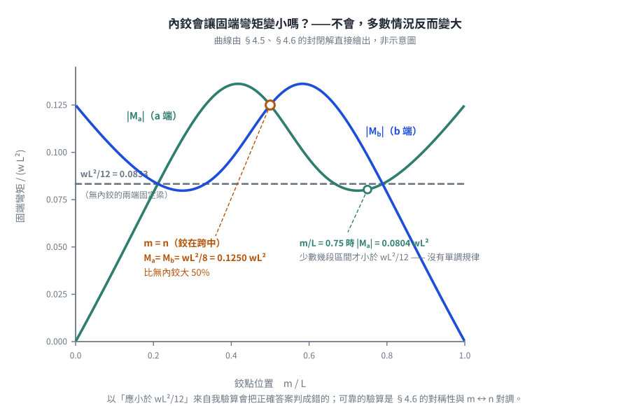

考題編號：SA-2017-2
主分類： 靜不定結構分析—力法 (SA-U2-1)
副分類：
分析法： 最小功法（Castigliano's 2nd Theorem）
標籤： 最小功法 卡氏定理 內鉸條件 固定端彎矩 靜不定梁
1. 原始題目重述 (Problem Restatement)

圖說：梁 a–c–b 兩端均為固定支承，c 點設有內鉸（梁在此點彎矩必為零）。均布載重 w（向下）作用於全梁。各段長度：ac = m，cb = n，全跨 L = m + n。所有桿件彈性模數 E 與斷面慣性矩 I 皆為定值。

圖 2 題目重繪（向量版），右上角把靜不定度攤開。它攔下的是「有鉸就變靜定」——內鉸只多提供一條方程式，兩端固定梁仍剩一度靜不定。
題目要求： 以最小功法求 a、b 兩端固定端彎矩（需標明方向，採用其他方法計算不予計分）。
2. 考題核心精神與出題者意圖 (Core Concepts & Examiner's Intent)
核心觀念： 內鉸條件（$M_c = 0$）是本題的「免費方程式」，它使靜不定度從 2 降為 1，大幅簡化最小功法的計算。出題者指定「只能用最小功法」，目的在於測驗考生能否正確建立 $\partial U/\partial X = 0$ 的積分方程，而非繞道使用傾角變位法或彎矩分配法。
出題者意圖：
- 測驗靜不定度的正確計算：不能被內鉸迷惑（兩固端本為二度靜不定，加內鉸後僅剩一度）。
- 測驗將反力以冗力 X 表示的能力：需同時使用整體平衡方程 + 鉸點條件。
- 測驗分段積分的執行：左右段的彎矩函數形式不同，偏導數也不同。
潛在陷阱：
- 符號定義不清楚，導致鉸點條件寫錯。
- 漏算彎矩函數中的 $M_a$ 項（X 的常數貢獻）。
- 對稱性自我驗算：令 m = n 時，$M_a$ 應等於 $M_b$（且等於 $-wm^2/2$），可快速驗算公式是否有誤。
3. 解題戰略地圖與陷阱分析 (Strategic Roadmap & Trap Analysis)
步驟化作戰計畫：
- 計算靜不定度（1度），選取冗力 $X = M_a$
- 以鉸點條件 + 整體平衡，將所有反力以 X 表示
- 建立左段（ac）與右段（cb）各自的彎矩函數 $M(x)$、$M(\xi)$
- 對 X 偏微分，得 $\partial M/\partial X$
- 執行 $\partial U/\partial X = \int \frac{M \cdot \partial M/\partial X}{EI} dx = 0$，解出 X
- 回代求 $M_b$，標明方向
- 用 m = n 的對稱情況驗算
⚠ 陷阱一：靜不定度計算
兩固端 = 4 個未知反力（$R_a, M_a, R_b, M_b$），平衡方程 2 條 + 鉸點條件 1 條 = 3 條 → 靜不定度 = 1。不要以為有鉸就變成靜定。
⚠ 陷阱二：鉸點條件的正確列法
取左段 ac 對鉸點 c 取矩（只含左段的力與矩），方程為：
$R_a \cdot m + M_a - \frac{wm^2}{2} = 0$
此處 $M_a$ 是 a 端斷面的內彎矩（下側受拉為正），不是「支承施加於梁的外力矩」——
兩者差一個負號，是本題最常見的翻號來源。全篇務必只用其中一種，見 §4.2 的約定表。
⚠ 陷阱三：右段從 b 往左積分
右段坐標 $\xi$（由 b 往左起算），此時彎矩函數形式對稱地從 b 端建立，計算偏導時需小心 $\partial M_b/\partial X$ 的值。
⚠ 陷阱四：最終對稱性驗算
令 m = n，應得 $M_a = M_b = -wm^2/2$，不符則必有計算錯誤。
3.5 變數層次分析 (Variable Hierarchy Analysis)
複習提示：第一次解題後，在每個卡住的知識點旁標記
⚠；第二次複習時只看有⚠的項目。
最終目標
以最小功法求固定端彎矩 $M_a$（a 端）與 $M_b$（b 端），標明方向。
本題關鍵公式（依計算順序）
$$\text{Step 1：靜不定度} \quad i = 4 - 2 - 1 = 1, \quad \text{冗力} \; X = M_a$$
$$\text{Step 2：鉸點條件} \quad R_a \cdot m + M_a - \frac{wm^2}{2} = 0 \implies R_a = \frac{wm}{2} - \frac{X}{m}$$
$$\text{Step 3：整體平衡} \quad R_b = wL - \boxed{R_a}, \quad M_b = \frac{wL^2}{2} - R_b \cdot L + X$$
$$\text{Step 4：左段彎矩} \quad M_L(x) = \boxed{R_a}\cdot x + X - \frac{wx^2}{2}, \quad \frac{\partial M_L}{\partial X} = 1 - \frac{x}{m}$$
$$\text{Step 5：右段彎矩} \quad M_R(\xi) = \boxed{R_b}\cdot\xi + \boxed{M_b} - \frac{w\xi^2}{2}, \quad \frac{\partial M_R}{\partial X} = \frac{\xi - n}{m}$$
$$\text{Step 6：最小功條件} \quad \int_0^m M_L \cdot \frac{\partial M_L}{\partial X}\,dx + \int_0^n M_R \cdot \frac{\partial M_R}{\partial X}\,d\xi = 0$$
$$\text{Step 7：解出} \; X = M_a, \text{再代回求 } M_b$$
L1：題目直接給定
| 符號 | 數值 | 說明 |
|---|---|---|
| $w$ | 定值（↓） | 均布載重強度 |
| $m$ | 定值 | ac 段長度 |
| $n$ | 定值 | cb 段長度 |
| $L$ | $m + n$ | 全跨長度 |
| $EI$ | 定值（均一） | 全梁彈性模數 × 慣性矩 |
| 支承條件 | a、b 固定端；c 為內鉸 | — |
L2：需知識點推導
【靜不定度與冗力選取】
| 符號 | 公式／來源 | 卡關? |
|---|---|---|
| $i$ | $(4 \text{ 未知}) - (2 \text{ 平衡}) - (1 \text{ 鉸條件}) = 1$ | |
| $X$ | 選取 $M_a$ 為冗力 |
【以 X 表示所有反力】
| 符號 | 公式／來源 | 卡關? |
|---|---|---|
| $R_a$ | 鉸點條件（對c取矩）：$\frac{wm}{2} - \frac{X}{m}$ | |
| $R_b$ | $wL - R_a = w\!\left(n+\frac{m}{2}\right) + \frac{X}{m}$ | |
| $M_b$ | 整體取矩推導：$-\frac{wnL}{2} - \frac{nX}{m}$ |
【彎矩函數與偏微分】
| 符號 | 公式／來源 | 卡關? |
|---|---|---|
| $M_L(x)$ | $R_a x + X - wx^2/2$（左段，$x$ 由 a 起算） | |
| $\partial M_L/\partial X$ | $1 - x/m$ | |
| $M_R(\xi)$ | $R_b \xi + M_b - w\xi^2/2$（右段，$\xi$ 由 b 起算） | |
| $\partial M_R/\partial X$ | $(\xi - n)/m$ |
【積分計算】
| 符號 | 公式／來源 | 卡關? |
|---|---|---|
| 左段積分 | $\displaystyle\int_0^m M_L\!\left(1-\frac{x}{m}\right)dx = \frac{wm^3}{24} + \frac{Xm}{3}$ | |
| 右段積分 | $\displaystyle\int_0^n M_R\frac{\xi-n}{m}d\xi = \frac{n^3 X}{3m^2} + \frac{wn^3(3n+4m)}{24m}$ | |
| $M_a$ | 合併令 $=0$ 解出 | |
| $M_b$ | 代回 $M_b = -\frac{wnL}{2} - \frac{nX}{m}$ |
L3：深層知識（不懂就卡住）
| 知識點 | 說明 | 卡關? |
|---|---|---|
| 最小功法（Castigliano 2nd Theorem） | 對冗力 X 偏微分總應變能：$\partial U/\partial X = 0$；等價於「X 對應的諧合位移（旋轉角）= 0」 | |
| 內鉸的力學意義 | 彎矩在鉸點恆為零，但剪力仍可傳遞 → 提供一條額外方程式，降低靜不定度 | |
| 分段積分坐標選取 | 右段可以從 b 往左設 $\xi$（讓邊界條件從 $\xi=0$ 起算），簡化邊界條件的帶入 | |
| 對稱驗算 | $m = n$ 時，$M_a = M_b$ 且值應等於 $-wm^2/2$（可用鉸點條件 + 對稱性直接推導） |
4. 步驟化詳細計算過程 (Step-by-Step Detailed Calculation)
4.1 靜不定度分析與冗力選取
未知反力： $R_a,\ M_a,\ R_b,\ M_b$（水平方向無外力，忽略水平反力）共 4 個。
可用方程式： 整體平衡 2 條 + 內鉸條件（$M_c = 0$）1 條 = 3 條。
$$i = 4 - 3 = 1 \quad \text{（一度靜不定）}$$
選取冗力： $X \equiv M_a$（a 端斷面內彎矩，下側受拉為正）
4.2 符號約定與以冗力 X 表示全部反力
全篇只用一套約定，不中途更換：
| 量 | 正方向 |
|---|---|
| 反力 $R_a,\ R_b$ | 向上為正 |
| 斷面內彎矩 $M(x)$ | 下側受拉（sagging）為正 |
| $X = M_a$ | a 端斷面內彎矩（UDL 下預期為負值，即上側受拉 hogging） |
| 座標 $x$ | 由 a 向右起算，$0 \le x \le L$ |
為什麼只用「斷面內彎矩」一種量： 本題最容易失分之處，就是「支承施加於梁的外力矩」
與「梁斷面的內彎矩」差一個負號。全程只談斷面內彎矩，就不會在中途翻號。
全梁彎矩函數（一式到底，不需分段）：
取自 a 端起算長度 $x$ 的左側自由體：
$$M(x) = R_a x + X - \frac{wx^2}{2}, \qquad 0 \le x \le L$$
$x=0$ 時 $M = X$，與 $X$ 的定義相符。內鉸只釋放彎矩、仍傳遞剪力，且 c 點無集中載重，
故 $M(x)$ 在全梁是同一條連續拋物線，只是在 $x=m$ 處恰好通過零點。
內鉸條件 $M(m) = 0$：
$$R_a m + X - \frac{wm^2}{2} = 0$$
$$\boxed{R_a = \frac{wm}{2} - \frac{X}{m}} \qquad \cdots (1)$$
整體 $\sum F_y = 0$：
$$\boxed{R_b = wL - R_a = w!\left(n + \frac{m}{2}\right) + \frac{X}{m}} \qquad \cdots (2)$$
b 端彎矩（把 $x = L$ 代回同一條 $M(x)$，不需另外取矩）：
$$M_b = M(L) = R_a L + X - \frac{wL^2}{2}$$
$w$ 項：$\dfrac{wm}{2}(m+n) - \dfrac{w(m+n)^2}{2} = \dfrac{w(m+n)}{2}\big[m - (m+n)\big] = -\dfrac{wnL}{2}$
$X$ 項：$-\dfrac{X}{m}(m+n) + X = -\dfrac{nX}{m}$
$$\boxed{M_b = -\frac{wnL}{2} - \frac{nX}{m}} \qquad \cdots (3)$$
4.3 建立彎矩函數
左段 ac（$x$ 由 a 往右，$0 \le x \le m$）：
$$M_L(x) = R_a \cdot x + X - \frac{wx^2}{2} = \left(\frac{wm}{2} - \frac{X}{m}\right)x + X - \frac{wx^2}{2}$$
對 X 偏微分：
$$\frac{\partial M_L}{\partial X} = -\frac{x}{m} + 1 = 1 - \frac{x}{m}$$
右段 cb（$\xi$ 由 b 往左，$0 \le \xi \le n$）：
這與 §4.2 的 $M(x)$ 是同一條曲線，只是換成從 b 端起算（$\xi = L - x$），
目的是讓 b 端的邊界條件從 $\xi = 0$ 直接讀出。可代入驗證 $M_R(\xi) \equiv M(L-\xi)$。
$$M_R(\xi) = R_b \cdot \xi + M_b - \frac{w\xi^2}{2}$$
$$= \left[w\!\left(n+\frac{m}{2}\right)+\frac{X}{m}\right]\xi + \left(-\frac{wnL}{2} - \frac{nX}{m}\right) - \frac{w\xi^2}{2}$$
對 X 偏微分：
$$\frac{\partial M_R}{\partial X} = \frac{\xi}{m} - \frac{n}{m} = \frac{\xi - n}{m}$$
4.4 最小功條件（$\partial U/\partial X = 0$）
$$\int_0^m \frac{M_L(x)}{EI}\frac{\partial M_L}{\partial X}dx + \int_0^n \frac{M_R(\xi)}{EI}\frac{\partial M_R}{\partial X}d\xi = 0$$
EI 為常數，可消去：
計算左段積分：
$$I_L = \int_0^m \left[\left(\frac{wm}{2}-\frac{X}{m}\right)x + X - \frac{wx^2}{2}\right]\left(1 - \frac{x}{m}\right)dx$$
展開後逐項積分（令 $A = wm/2 - X/m$）：
$$I_L = A\!\left(\frac{m^2}{2} - \frac{m^2}{3}\right) + X\!\left(m - \frac{m}{2}\right) - \frac{w}{2}\!\left(\frac{m^3}{3} - \frac{m^3}{4}\right)$$
$$= \frac{Am^2}{6} + \frac{Xm}{2} - \frac{wm^3}{24}$$
代入 $A = wm/2 - X/m$：
$$I_L = \frac{m^2}{6}\!\left(\frac{wm}{2} - \frac{X}{m}\right) + \frac{Xm}{2} - \frac{wm^3}{24}$$
$$= \frac{wm^3}{12} - \frac{Xm}{6} + \frac{Xm}{2} - \frac{wm^3}{24} = \frac{wm^3}{24} + \frac{Xm}{3}$$
計算右段積分：
$$I_R = \int_0^n M_R(\xi) \cdot \frac{\xi - n}{m}\,d\xi = \frac{1}{m}\int_0^n M_R(\xi)(\xi - n)\,d\xi$$
令 $B = w(n + m/2) + X/m$，$C = -wnL/2 - nX/m$，則 $M_R = B\xi + C - w\xi^2/2$：
$$\frac{1}{m}\int_0^n (B\xi + C - \tfrac{w}{2}\xi^2)(\xi - n)\,d\xi$$
$$= \frac{1}{m}\left[Bn^3\!\left(\frac{1}{3}-\frac{1}{2}\right) + Cn^2\!\left(\frac{1}{2}-1\right) + wn^4\!\left(\frac{1}{6}-\frac{1}{8}\right)\cdot\frac{1}{2}\right]$$
（展開各項後整理）：
$$= \frac{1}{m}\left[-\frac{Bn^3}{6} - \frac{Cn^2}{2} + \frac{wn^4}{24}\right]$$
代入 B、C 並整理（分別收集 X 項與 w 項）：
X 項：
$$\frac{1}{m}\left[-\frac{n^3}{6}\cdot\frac{X}{m} - \frac{n^2}{2}\cdot\left(-\frac{nX}{m}\right)\right] = \frac{n^3 X}{m^2}\!\left(-\frac{1}{6}+\frac{1}{2}\right) = \frac{n^3 X}{3m^2}$$
w 項：
$$\frac{1}{m}\left[-\frac{n^3}{6}\cdot\frac{w(2n+m)}{2} + \frac{n^2}{2}\cdot\frac{wn(m+n)}{2} + \frac{wn^4}{24}\right]$$
$$= \frac{wn^3}{m}\left[\frac{-(2n+m)}{12} + \frac{(m+n)}{4} + \frac{n}{24}\right]$$
$$= \frac{wn^3}{m}\cdot\frac{-2(2n+m)+6(m+n)+n}{24} = \frac{wn^3}{m}\cdot\frac{3n+4m}{24} = \frac{wn^3(3n+4m)}{24m}$$
故：
$$I_R = \frac{n^3 X}{3m^2} + \frac{wn^3(3n+4m)}{24m}$$
4.5 解出 $M_a$
令 $I_L + I_R = 0$：
$$\frac{wm^3}{24} + \frac{Xm}{3} + \frac{n^3 X}{3m^2} + \frac{wn^3(3n+4m)}{24m} = 0$$
$$X\!\left(\frac{m}{3} + \frac{n^3}{3m^2}\right) = -\frac{wm^3}{24} - \frac{wn^3(3n+4m)}{24m}$$
$$X \cdot \frac{m^3 + n^3}{3m^2} = -\frac{w[m^4 + n^3(3n+4m)]}{24m}$$
$$X = -\frac{w[m^4 + n^3(3n+4m)]}{24m} \cdot \frac{3m^2}{m^3+n^3}$$
注意到 $m^3 + n^3 = (m+n)(m^2-mn+n^2)$ 及 $m^4 + n^3(3n+4m) = (m+n)(m^3-m^2n+mn^2+3n^3)$（可展開驗證），因此：
$$X = -\frac{w \cdot (m+n)(m^3-m^2n+mn^2+3n^3)}{8(m+n)(m^2-mn+n^2)}$$
$$\boxed{M_a = -\frac{wm(m^3 - m^2n + mn^2 + 3n^3)}{8(m^2 - mn + n^2)}}$$
分子可再提出 $(m+n) = L$，得到較易記的等價形式：
$$M_a = -\frac{w\,m\,L\,(m^2 - 2mn + 3n^2)}{8(m^2 - mn + n^2)}$$
方向： $M_a < 0$，代表 hogging（a 端上側受拉，即固定端彎矩使梁上緣受拉，為標準均布載重下固定端行為）。
4.6 求 $M_b$
代入 $M_b = -\frac{wnL}{2} - \frac{nX}{m}$：
$$M_b = -\frac{wn(m+n)}{2} + \frac{n}{m}\cdot\frac{wm(m^3-m^2n+mn^2+3n^3)}{8(m^2-mn+n^2)}$$
$$= \frac{wn}{8(m^2-mn+n^2)}\left[-(m+n)\cdot 4(m^2-mn+n^2) + (m^3-m^2n+mn^2+3n^3)\right]$$
展開 $-4(m+n)(m^2-mn+n^2) = -4(m^3+n^3) = -4m^3-4n^3$：
$$-4m^3-4n^3 + m^3 - m^2n + mn^2 + 3n^3 = -3m^3 - m^2n + mn^2 - n^3 = -(3m^3+m^2n-mn^2+n^3)$$
$$\boxed{M_b = -\frac{wn(3m^3 + m^2n - mn^2 + n^3)}{8(m^2 - mn + n^2)}}$$
同樣提出 $(m+n) = L$：
$$M_b = -\frac{w\,n\,L\,(3m^2 - 2mn + n^2)}{8(m^2 - mn + n^2)}$$
兩式互為 $m \leftrightarrow n$ 對調，可作為抄寫錯誤的快速檢查。
方向： $M_b < 0$，代表 hogging（b 端上側受拉）。
4.7 最終結果彙整
$$\boxed{M_a = -\frac{wm(m^3 - m^2n + mn^2 + 3n^3)}{8(m^2 - mn + n^2)}} \quad (\text{hogging，a 端上側受拉})$$
$$\boxed{M_b = -\frac{wn(3m^3 + m^2n - mn^2 + n^3)}{8(m^2 - mn + n^2)}} \quad (\text{hogging，b 端上側受拉})$$

圖 3 代表案例 $m/L = 0.4$ 的載重／剪力／彎矩三聯圖，座標全部由 §4.5、§4.6 的封閉解代入算出。它攔下三件事：內鉸處的彎矩沒有歸零、剪力零點與彎矩極值位置對不上、固端彎矩符號寫成正的。
4.8 固端彎矩隨鉸點位置的變化
把 §4.5、§4.6 的公式對 $m/L$ 掃過一遍，可以看出一件與直覺相反的事：

圖 4 $|M_a|$、$|M_b|$ 隨鉸點位置的變化，與「無內鉸的兩端固定梁」$wL^2/12$ 對照。$m = n$ 時兩端都是 $wL^2/8$，比無內鉸大 50%*；只有少數幾段區間才小於 $wL^2/12$，且並非單調。它攔下的是「內鉸讓固端彎矩變小」這個常見但錯誤的結論——拿它來自我驗算，會把正確答案判成錯的。
*
5. 關鍵爭議點與進階探討 (Critical Issues & Advanced Discussion)
對稱性驗算（令 m = n）：
$$M_a = -\frac{wm(m^3-m^3+m^3+3m^3)}{8(m^2-m^2+m^2)} = -\frac{wm \cdot 4m^3}{8m^2} = -\frac{wm^2}{2}$$
$$M_b = -\frac{wm(3m^3+m^3-m^3+m^3)}{8m^2} = -\frac{wm \cdot 4m^3}{8m^2} = -\frac{wm^2}{2}$$
$M_a = M_b$ ✓ 符合對稱性。
獨立驗算： $m = n$ 時鉸點位於跨中，由對稱性可知鉸點剪力為零，
故左半段由 $R_a$ 單獨承擔自身載重 $wm$，即 $R_a = wm$（不是 $wm/2$）。代入鉸點條件：
$$\sum M_c^{(L)} = R_a m + M_a - \frac{wm^2}{2} = wm^2 + M_a - \frac{wm^2}{2} = 0 \implies M_a = -\frac{wm^2}{2} \;✓$$
亦可由 (1) 反算核對：$R_a = \frac{wm}{2} - \frac{X}{m} = \frac{wm}{2} + \frac{wm}{2} = wm$ ✓
與傾角變位法結果比較：
本題題目明令「採用其他方法計算不予計分」，但實務驗算可用傾角變位法或彎矩分配法確認。兩者應給出相同結果，差異代表計算錯誤。
分母 $m^2 - mn + n^2$ 恆正：
$(m-n)^2 = m^2 - 2mn + n^2 \ge 0 \implies m^2 - mn + n^2 \ge mn > 0$（m, n > 0），故分母不為零，公式在任意正值 m, n 下均有定義。
物理意義（常見的直覺陷阱）： 很多人直覺認為「多一個鉸 → 束制變鬆 → 固端彎矩變小」，
這是錯的。內鉸沒有放鬆任何支承，它切斷的是梁跨越 c 點傳遞彎矩的能力。
原本連續的固端梁，是靠 c 附近的負彎矩把兩端「拉住」；這條路徑被切斷後，
每一側各自退化成接近「一端固定、一端簡支」的行為，固端彎矩反而可能變大。
最乾淨的反例就是對稱情況 $m = n$：
| 情況 | a 端固端彎矩 |
|---|---|
| 兩端固定、無內鉸 | $wL^2/12 = 0.0833\,wL^2$ |
| 兩端固定、鉸在跨中（$m = n$） | $wm^2/2 = wL^2/8 = 0.125\,wL^2$ ← 大 50% |
| 兩端固定、鉸貼近 b 端（$n \to 0$） | $wm^2/8 \to wL^2/8 = 0.125\,wL^2$ |
鉸點偏心時，兩端固端彎矩與 $wL^2/12$ 的大小關係隨 $m/L$ 變動且非單調：
例如 $m/L = 0.75$ 時 $|M_a| = 0.0804\,wL^2$ 略小於 $wL^2/12$，
而 $m/L = 0.90$ 時 $|M_a| = 0.1017\,wL^2$ 又大於 $wL^2/12$
（交叉點在 $m/L = 0.211,\ 0.667,\ 0.789$，見 §4.8 的曲線圖）。
可靠的敘述只有一句：不可以假設內鉸一定讓固端彎矩變小。
考場上若想用「小於 $wL^2/12$」來自我驗算，會把正確答案判成錯的。
真正可用的驗算是 §4.6 的對稱性檢查與 $m \leftrightarrow n$ 對調檢查。
圖解補繪：2026-08-28（向量圖，腳本 gen_SA-2017-2.py，可重跑）